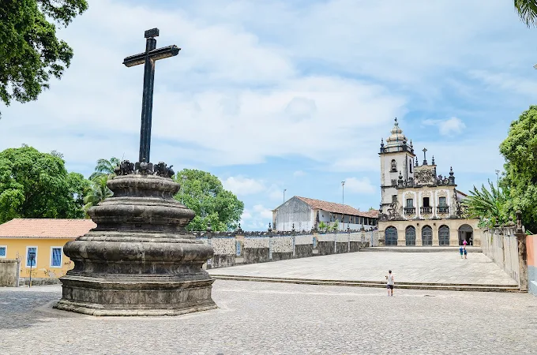

Ponto 1: Introdução ao Complexo Franciscano
(Inicie este áudio no grande adro, em frente à fachada da Igreja de São Francisco, próximo ao cruzeiro.)
Seja muito bem-vindo! Você está no adro do Centro Cultural São Francisco, um monumental complexo arquitetônico que representa um dos mais importantes legados do período barroco no Brasil. O que vemos hoje é o resultado de séculos de construção, fé e resiliência, iniciado ainda no final do século XVI.
Este grandioso conjunto franciscano é formado por várias edificações que visitaremos:
A Igreja de São Francisco e o Convento de Santo Antônio.
A Capela Dourada, também conhecida como Casa de Oração dos Terceiros.
O Claustro da Ordem Terceira e a Capela de São Benedito.
Tombado pelo Instituto do Patrimônio Histórico e Artístico Nacional (IPHAN) em 1952, este complexo é um marco fundamental no processo de colonização e desenvolvimento de João Pessoa.
A história deste local começa entre 1588 e 1589, quando os primeiros frades franciscanos, liderados pelo Frei Melchior, fundaram aqui o Convento de Santo Antônio. O objetivo era claro: pacificar os povos originários e consolidar a presença portuguesa na capitania da Paraíba, que na época era movida pela economia da cana-de-açúcar.
Este solo que você pisa testemunhou eventos marcantes, como a invasão holandesa (1634-1655), período em que o convento foi transformado em quartel-general. Após a expulsão dos invasores, o complexo foi restaurado e enriquecido com os magníficos elementos da arte barroca que vemos hoje, representando uma das maiores riquezas monumentais da América Latina.
Observe ao seu redor. A grandiosidade da fachada, os muros adornados com nichos de azulejos que representam a Via Sacra e o imponente cruzeiro de calcário no centro do adro. Cada detalhe aqui conta uma parte da história.
Agora, vamos nos aproximar da entrada da igreja para continuar nossa viagem no tempo. Siga para o próximo ponto.